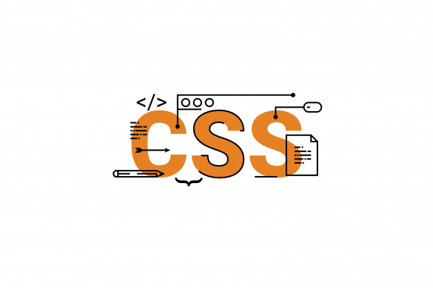

Cascading Style Sheets (CSS) is a style sheet language used for describing the presentation of a document written in a markup language such as HTML.[1] CSS is a cornerstone technology of the World Wide Web, alongside HTML and JavaScript.
CSS is designed to enable the separation of presentation and content, including layout, colors, and fonts.[3] This separation can improve content accessibility, provide more flexibility and control in the specification of presentation characteristics, enable multiple web pages to share formatting by specifying the relevant CSS in a separate .css file which reduces complexity and repetition in the structural content as well as enabling the .css file to be cached to improve the page load speed between the pages that share the file and its formatting.